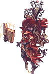

Sealed Shrine
Jump to navigation
Jump to search
| This quest or instance is repeatable. | ||
|---|---|---|
| Cooldown | Tickets Available | |
|
12 hours |
Solo: No Limit | Party: No Limit |
Overview
| Requirements | |
|---|---|
| Base Level: | 75 |
| Starting Point: | monk_test 306/145 |
| Party: | 1 or more players |
| Rewards | |
| Experience: | - |
| Items: | - |
Walkthrough
- Go to the entrance by talking to the Warper > Instances > Sealed Shrine.
- The party leader must talk to Friar Patrick and select I want to enter to generate the instance.
- Click on Grave of Baphomet and select Touch the stone to enter the instance.
- Once you warp inside, walk directly to the right and click on talk to the Gravestone . Select Waited for me?.
- A member needs to find a
 Pendant of Spirit by talking to the gravestones around the map . These are the blue dots on the minimap.
Pendant of Spirit by talking to the gravestones around the map . These are the blue dots on the minimap.
- Once you have received one, the party leader must talk to the first Gravestone again . If the party leader didn't receive the Pendant of Spirit, you can simply trade it to him.
- The Ancient Hero's Soul will appear in the middle of the map , you will need to make your way over there.
- The party leader must talk to the NPC and select Activate the torches.
- The party leader must now collect 10 Essence of Fire from the torches (they show up on the minimap in red). They can be traded.
- All party members also need to collect 1
 Token of Apostle from the Apostles of Baphomet monsters (these look just like any other mobs, so be careful!).
Token of Apostle from the Apostles of Baphomet monsters (these look just like any other mobs, so be careful!).
- The party leader needs to talk to Ancient Hero's Soul again , he will collect all Essence of Fire.
- You must then talk with the NPC again to activate the next step.
- Everyone needs to head to the south-east part of the map and enter the gate. To pass the gate you need to have 1 Token of Apostle in your inventory.
- Talk to the Main Alter, at the center of the map, to summon Great Demon Baphomet. Watch out because you will get ambushed by monsters when entering the room.
- He will become invicible after a couple of seconds, if you can't kill him in time go to the next step.
- You will get information about which seal you must drag Baphomet into, there are five of them (one at each diagonal extreme and one at the center). Once you drag Baphomet into one of them, you must click in the center of the Magic Seal. This will make Baphomet vulnerable to attacks for a short period of time. The player who activated the seal will also get stone cursed.


Monsters Info
| Image | Name | Level | HP | Size / Race / Element |
|---|---|---|---|---|
| Wind Ghost | 80 | 4,008 | Medium / Demon / Wind 3 | |
|  | Evil Druid | 80 | 5,149 | Large / Undead / Undead 4 |
| Wind Ghost | 80 | 4,008 | Medium / Demon / Wind 3 | |

|
Wraith Dead | 86 | 10,035 | Large / Undead / Undead 4 |
| Lude | 101 | 11,574 | Small / Undead / Undead 4 | |
| Ancient Mimic | 112 | 14,700 | Large / Formless / Neutral 3 | |
| Khalitzburg | 118 | 23,986 | Large / Undead / Undead 1 | |
| Zombie Master | 119 | 25,510 | Medium / Undead / Undead 1 | |
| Flame Skull | 121 | 21,276 | Small / Demon / Ghost 3 | |
| Banshee | 130 | 48,666 | Medium / Demon / Dark 4 | |
| Skeleton General | 139 | 180,130 | Medium / Undead / Undead 1 | |
Great Demon Baphomet
|
98 | 4,520,000 | Large / Demon / Dark 3 |